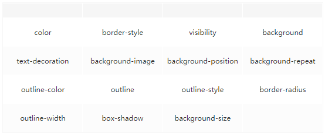

浏览器工作原理
前言
浏览器对于前端来说，并不陌生。但是我们往往接触的都是一个黑盒的浏览器，并不知道其内部的工作原理，这篇文章我们主要来研究一下浏览器内部是如何去加载一个页面的。
内容
一、浏览器的组成
- 用户界面-包括地址栏、前进/后退按钮、书签菜单等。除了浏览器主窗口显示的您的请求的页面外，其他显示的各个部分都属于用户界面。
- 浏览器引擎-在用户界面和渲染引擎之间传送指令。
- 渲染引擎-负责显示请求的内容。如果请求的内容是 HTML，它就是负责解析 HTML 和 CSS 内容，并将解析后的内容显示在屏幕上。
- 网络-用于网络调用，比如 HTTP 请求。其接口与平台无关，并为所有平台提供底层实现。
- 用户界面后端-用于绘制基本的窗口小部件，比如组合框和窗口。其公开了与平台无关的能用接口，而在底层使用操作系统的用户界面方法。
- JavaScript 解释器-用于解析和执行 Javascript 代码。
- 数据存储-这是持久层。浏览器需要在硬盘上保存各种数据，例如 cookie。新的 HTML 规范（HTML5）定义了“网络数据库”，这是一个完整（但是轻便）的浏览器内数据库。

二、渲染引擎
浏览器渲染是由各大浏览器厂商依照 W3C 标准自行研发的，也被称之为浏览器内核。目前，市面上使用的主流浏览器内核有 5 类：Trident、Gecko、Presto、Webkit、Blink。
- Trident：俗称 IE 内核，也被叫做 MSHTML 引擎，目前在使用的浏览器有 IE11-,以及各种国产多核浏览器中的 IE 兼容模块。另外微软的 Edge 浏览器不再使用 MSHTML 引擎，而是使用类全新的引擎 EdgeHTML。
- Gecko：俗称 Firefox 内核，Netscape6 开始采用的内核，后来的 Mozilla FireFox（火狐浏览器）也采用了该内核，Gecko 的特点是代码完全公开，因此，其可开发程序很高，全世界的程序员都可以 为其编写代码，增加功能。因为这是个开源内核，因此受到许多人的青睐，Gecko 内核的浏览器也是很多，这也是 Gecko 内核虽然年轻但市场占有率能够迅速提高的重要原因。
- Presto：Opera 前内核，为啥说是前内核呢？因为 Opera12.17 以后便拥抱了 Google Chrome 的 Blink 内核，此内核就没了寄托。
- Webkit：Safari 内核，也是 Chrome 内核原型，主要是 Safari 浏览器在使用的内核，也是特性上表现较好的浏览器内核。也被大量使用在移动端浏览器上。
- Blink：由 Google 和 Opera Software 开发，在 Chrome（28 及往后版本）、Opera(15 及往后版本)和 Yandex 浏览器中使用。Blink 其实是 Webkit 的一个分支，添加了一些优化的新特性，例如跨进程的 iframe，将 DOM 移入 JavaScript 中来提高 JavaScript 对 DOM 的访问速度等，目前较多的移动端应用内嵌的浏览器内核也渐渐开始采用 Blink。
三、渲染引擎的工作流程
浏览器渲染引擎最重要的工作就是将 HTML 和 CSS 文档解析组合最终渲染到浏览器窗口上。如下图所示，渲染引擎在接受到 HTML 文件后主要进行了以下五个步骤：
- 处理 HTML 并构建 DOM 树。
- 处理 CSS 构建 CSSOM 树。
- 将 DOM 与 CSSOM 合并成一个渲染树。
- 根据渲染树来布局，计算每个节点的位置。
- 调用 GPU 绘制，合成图层，显示在屏幕上。

3.1 解析
在呈现引擎中解析是非常重要的环节。解析文档即是将文档转化为意义的结构，解析后得到的结果通常代表了文档结构的节点树，被称作解析树或语法树。
而解析的过程一般为词法分析和语法分析，语法分析即是大量的标记过程，词法分析器根据特定的字典（语言的词汇）对输入内容进行标记；语法分析即是应用语言语法的过程。不同语言拥有不同的解析器，在这里不做多的赘述，如果想了解更多，可以参考浏览器的工作原理：新式网络浏览器幕后揭秘。在浏览器中，有 HTML 解析器，CSS 解析器，JavaScript 解析器等。
3.2 构建 DOM
浏览器会遵守一套步骤将 HTML 文件转换为 DOM 树。可以分为几个步骤：

- 浏览器从磁盘或网络读取 HTML 的原始字节，并根据文件的指定编码（例如 UTF-8）将它们转换成字符串。 在网络中传输的内容其实都是 0 和 1 这些字节数据。当浏览器接收到这些字节数据以后，它会将这些字节数据转换为字符串，也就是我们写的代码。
- 将字符串转换成 Token，例如：
<html>、<body>等。Token 中会标识出当前 Token 是“开始标签”或是“结束标签”亦或是“文本”等信息。
这时候你一定会有疑问，节点与节点之间的关系如何维护？
事实上，这就是 Token 要标识“起始标签”和“结束标签”等标识的作用。例如“title”Token 的起始标签和结束标签之间的节点肯定是属于“head”的子节点。

上图给出了节点之间的关系，例如：“Hello”Token 位于“title”开始标签与“title”结束标签之间，表明“Hello”Token 是“title”Token 的子节点。同理“title”Token 是“head”Token 的子节点。
- 生成节点对象并构建 DOM
事实上，构建 DOM 的过程中，不是等所有 Token 都转换完成后再去生成节点对象，而是一边生成 Token 一边消耗 Token 来生成节点对象。换句话说，每个 Token 被生成后，会立刻消耗这个 Token 创建出节点对象。注意：带有结束标签标识的 Token 不会创建节点对象。
假设有段 HTML 文本：
<html>
<head>
<title>Web page parsing</title>
</head>
<body>
<div>
<h1>Web page parsing</h1>
<p>This is an example Web page.</p>
</div>
</body>
</html>
2
3
4
5
6
7
8
9
10
11
上面这段 HTML 会解析成这样：

3.3 构建 CSSOM
DOM 会捕获页面的内容，但浏览器还需要知道页面如何展示，所以需要构建 CSSOM。
构建 CSSOM 的过程与构建 DOM 的过程非常相似，当浏览器接收到一段 CSS，浏览器首先要做的是识别出 Token，然后构建节点并生成 CSSOM。

在这一过程中，浏览器会确定下每一个节点的样式到底是什么，并且这一过程其实是很消耗资源的。因为样式你可以自行设置给某个节点，也可以通过继承获得。在这一过程中，浏览器递归 CSSOM 树，然后确定具体的元素到底是什么样式。
注意：CSS 匹配 HTML 元素是一个相当复杂和有性能问题的事情。所以，DOM 树要小，CSS 尽量用 id 和 class，千万不要过渡层叠下去。
3.4 构建渲染树
当我们生成 DOM 树和 CSSOM 树以后，就需要将这两棵树组合为渲染树。
在这一过程中，不是简单的将两个合并就行了。渲染树只会包括需要显示的节点和这些节点的样式信息，如果某个节点是display:none的，那么就不会在渲染树中显示。
3.5 布局与绘制
当浏览器生成渲染树以后，就会根据渲染树来进行布局（也可以叫做回流）。这一阶段浏览器要做的事情是要弄清楚各个节点在页面中的确切位置和大小。通常这一行为也被称为“自动重排”。
布局流程的输出是一个“盒模型”，它会精确地捕获每个元素在视口内的确切位置和尺寸，所有相对测量值都将转换为屏幕上的绝对像素。
布局完成后，浏览器会立即发出“Paint Setup”和“Paint”事件，将渲染树转换成屏幕上的像素。
3.6 渲染过程中遇到 JS 文件怎么处理？
JavaScript 的加载、解析与执行会阻塞 DOM 的构建，也就是说，在构建 DOM 时，HTML 解析器若遇到了 JavaScript，那么它会暂停构建 DOM，将控制权移交给 JavaScript 引擎，等 JavaScript 引擎运行完毕，浏览器再从中断的地方恢复 DOM 构建。
也就是说，如果你想首屏渲染的越快，就越不应该在首屏就加载 JS 文件，这也是都建议将 script 标签放在 body 标签底部的原因。当然在当下，并不是说 script 标签必须放在底部，因为你可以给 script 标签添加 defer 或者 async 属性（下文会介绍这两者的区别）。
JS 文件不只是阻塞 DOM 的构建，它会导致 CSSOM 也阻塞 DOM 的构建。
原本 DOM 和 CSSOM 的构建是互不影响，井水不犯河水，但是一旦引入了 JavaScript，CSSOM 也开始阻塞 DOM 的构建，只有 CSSOM 构建完毕后，DOM 再恢复 DOM 构建。
这是什么情况？
这是因为 JavaScript 不只是可以改 DOM，它还可以更改样式，也就是它可以更改 CSSOM。前面我们介绍，不完整的 CSSOM 是无法使用的，但 JavaScript 中想访问 CSSOM 并更改它，那么在执行 JavaScript 时，必须要能拿到完整的 CSSOM。所以就导致了一个现象，如果浏览器尚未完成 CSSOM 的下载和构建，而我们却想在此时运行脚本，那么浏览器将延迟脚本执行和 DOM 构建，直至其完成 CSSOM 的下载和构建。也就是说，在这种情况下，浏览器会先下载和构建 CSSOM，然后再执行 JavaScript，最后在继续构建 DOM。
3.7 回流和重绘
我们知道，当网页生成的时候，至少会渲染一次。在用户访问的过程中，还会不断重新渲染。重新渲染会重复上图中的回流+重绘或者只有第五个步(重绘)。
- 重绘：当 render tree 中的一些元素需要更新属性，而这些属性只是影响元素的外观、风格，而不会影响布局，比如 background-color。
- 回流：当 render tree 中的一部分（或全部）因为元素的规模尺寸、布局、隐藏等改变而需要重新构建。
回流必定会发生重绘，重绘不一定会引发回流。重绘和回流会在我们设置节点样式时频繁出现，同时也会很大程度上影响性能。回流所需的成本比重绘高的多，改变父节点里的子节点很可能会导致父节点的一系列回流。
3.8 常见引起回流属性和方法
任何会改变元素几何信息（元素的位置和尺寸大小）的操作，都会触发回流
- 添加或者删除可见的 DOM 元素
- 元素尺寸改变——边跑、填充、边框、宽度和高度
- 内容变化，比如用户在 input 框中输入文字
- 浏览器窗口尺寸改变——resize 事件发生时
- 计算 offsetWidth 和 offsetHeight 属性
- 设置 style 属性的值

3.9 常见引起重绘属性和方法

3.10 如何减少回流、重绘
- 使用 transform 替代 top
- 使用 visibility 替换 display:none，因为前者只会引起重绘，后者会引发回流（改变了布局）
- 不要把节点的属性放在一个循环里当成循环里的变量。
for(let i = 0; i < 1000; i++) {
// 获取 offsetTop 会导致回流，因为需要去获取正确的值
console.log(document.querySelector('.test').style.offsetTop)
}
2
3
4
- 不要使用 table 布局，可能很小的一个小改动会造成整个 table 的重新布局
- 动画实现的速度的选择，动画速度越快，回流次数越多，也可以选择使用 requestAnimationFrame
- CSS 选择符从右往左匹配查找，避免节点层级过多
- 将频繁重绘或者回流的节点设置为图层，图层能够阻止该节点的渲染行为影响别的节点。比如对于 video 标签来说，浏览器会会自动将该节点变为图层。
3.11 async 和 defer 的作用是什么？有什么区别?
对比下 defer 和 async 属性的区别：

其中蓝色线代表 JavaScript 加载；红色线代表 JavaScript 执行；绿色线代表 HTML 解析。
- 情况 1
<script src="script.js"></script>
没有 defer 或 async，浏览器会立即加载并执行指定的脚本，也就是说不等待后续载入的文件元素，读到就加载并执行。
- 情况 2
<script async src="script.js"></script>
async 属性表示异步执行引入的 Javascript，与 defer 的区别在于，如果已经加载好，就会开始执行——无论些该是 HTML 解析阶段还是 DOMContentLoaded 触发之后。需要注意的是，这种方式加载的 javascript 依然会阻塞 load 事件。换句话说，async-script 可能在 DOMContentLoaded 触发之前或之后执行，但一定在 load 触发之前执行。
- 情况 3
<script defer src="script.js"></script>(延迟执行)
defer 属性表示延迟执行引入的 JavaScript，即这段 JavaScript 加载时 HTML 并未停止解析，这两个过程是并行的。整个 document 解析完毕且 defer-script 也加载完成之后（这两件事情的顺序无关），会执行所有由 defer-script 加载的 JavaScript 代码，然后触发 DOMContentLoaded 事件。
defer 与相比普通 script，有两点区别：载入 JavaScript 文件时不阻塞 HTML 的解析，执行阶段被放到 HTML 标签解析完成之后。
defer 与 async 区别
- 两者都不会阻止
document的解析 defer会在DOMContentLoaded前依次执行（可以利用这两点哦！）async则是下载完立即执行，不一定是在DOMContentLoaded前async因为顺序无关，所以很适合像Google Analytics这样的无依赖脚本
四、总结

- 浏览器工作流程：构建 DOM->构建 CSSOM->构建渲染树->布局->绘制。
- CSSOM 会阻塞渲染，只有当 CSSOM 构建完毕后才会进入下一个阶段构建渲染树。
- 通常情况下 DOM 和 CSSOM 是并行构建的，但是当浏览器遇到一个 scrip 标签时，DOM 构建将暂停，直至脚本完成执行。但由于 JavaScript 可以修改 CSSOM，所以需要等 CSSOM 构建完毕后再执行 JS。
- 如果你想首屏渲染的越快，就越不应该在首屏就加载 JS 文件，建议将 script 标签放在 body 标签底部。
参考资料
- 浏览器的工作原理
- 深入浅出浏览器渲染原理
- 渲染树的形成原理你真的很懂吗？
- 前端都该懂的浏览器工作原理，你懂了吗？
- 深入理解现代浏览器
- 从浏览器多进程到 JS 单线程，JS 运行机制最全面的一次梳理
- 11 道浏览器原理面试题
- 你不知道的浏览器性能优化
- 从手机滚动丢帧问题，学习浏览器合成与渲染层优化
- 从 Node 实例推导浏览器的渲染机制
- 浏览器合成与渲染层优化
- 【第 1804 期】Web 内容如何影响电池的使用
- 浏览器帧原理剖析
- 浏览器相关原理(面试题)详细总结一
- 浏览器相关原理(面试题)详细总结二
- 一文带你看透 Chrome 浏览器架构
- Chromium 中文文档
- Chrome 页面呈现原理与性能优化之企业级分享总结(内附完整 ppt)
- JavaScript 内部原理：浏览器的内幕
- CSS 渲染原理以及优化策略
- 【第 1892 期】GPU 加速在前端的应用
- 浏览器渲染基本原理解析
- CSS 渲染原理以及优化策略
联系作者
平凡世界，贵在坚持。